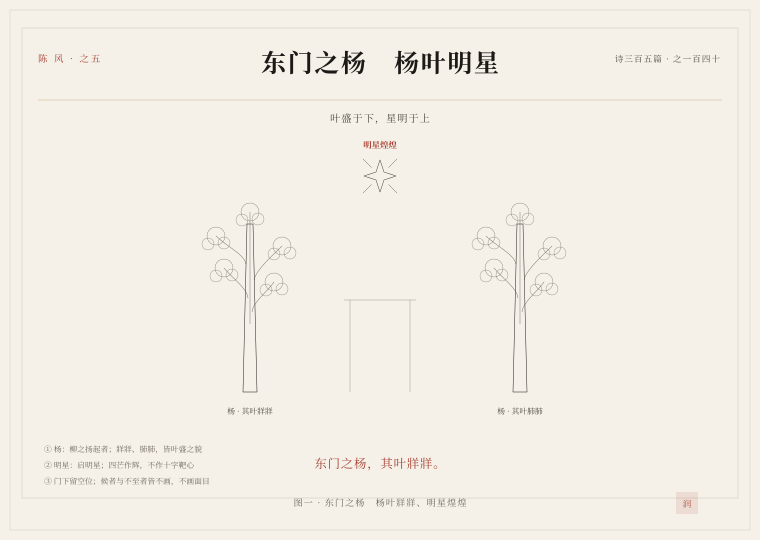
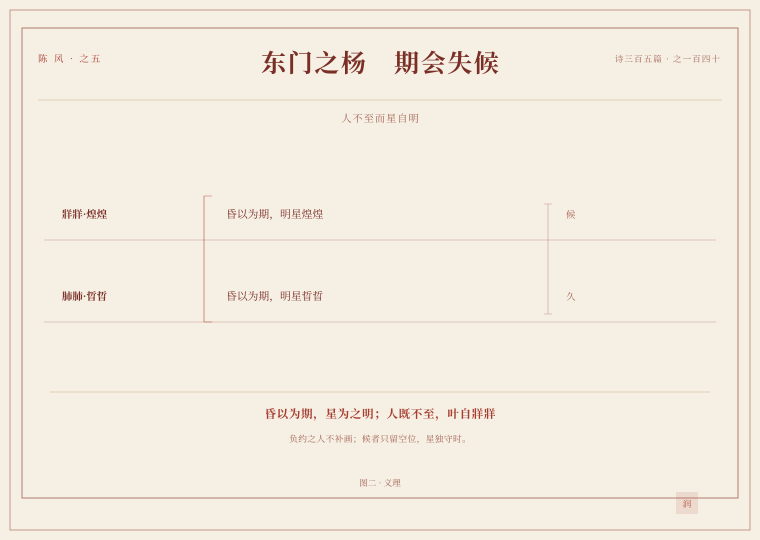

第一百四十篇 东门之杨
陈风 · 之五 SJ140
朗读 · 普通话
依经文原文朗读，章次不读出；配古琴底乐，不改速、不加拖腔。全库同一音色（豆包 TTS），非播音员录制。
一 解题
诗三判：
- 谁在说：如期而至、候人不至之人。东门之杨，其叶牂牂、肺肺；昏以为期，而明星煌煌、晢晢。
- 说什么事：二章换「牂牂／肺肺」「煌煌／晢晢」，所同者是一「昏以为期」之约；叶盛星明，候之久而人不至。约在黄昏，候至星明；人不见，而星替人守时。
- 为何编在此：与《东门之池》同以东门为地，彼写相接之愿，此写失期之怅。陈风男女多违，此篇正是「亲迎而女不至」一境；两诗相次，见东门一地两情。
《毛序》：“《东门之杨》，刺时也。昏姻失时，男女多违。亲迎女犹有不至者也。”
朱子《诗集传》：“兴也。东门，相期之地也。杨，柳之扬起者也。牂牂，盛貌。明星，启明也。煌煌，大明貌。○此亦男女期会而有负约不至者，故因其所见以起兴也。”
本库的看法：《东门之杨》是一首候人不至、期而见负的诗。
毛序归之「昏姻失时、男女多违、亲迎女不至」，是风俗背景读法；朱子直作「男女期会而有负约不至者」，因地因物起兴。本库从朱读，以陈地昏姻多违为背景，不把诗坐成某一次亲迎记事。
诗面只写杨叶与明星，不写候者面目，不写不至之人；候之之久，由星之明见出。
断语：昏以为期，星为之明；人既不至，叶自牂牂。
先辨五事：「杨」是柳之扬起者，不是杨树（今之白杨）；「牂牂」「肺肺」皆叶盛之貌，非叶声；「昏」是黄昏，不是昏乱；「明星」是启明星，不是泛指群星；「煌煌」「晢晢」皆明貌，状星之大明，不是火光。
二 经文
第一章
东门之杨，其叶牂牂。
昏以为期，明星煌煌。
第二章
东门之杨，其叶肺肺。
昏以为期，明星晢晢。
分章：二章，章四句。
三 韵读
- 一章：牂牂、煌煌，阳部（叠韵）。
- 二章：肺肺、晢晢，祭部（月部入声）。
读法：一章阳部平声舒扬，二章祭部入声收涩；「昏以为期」一句二章不改，是全诗之骨；叶与星两叠，候之久见乎辞。
四 字义与名物
- 杨：柳之扬起者，枝条上扬。牂牂：叶盛貌。肺肺：犹牂牂，亦叶盛貌。
- 昏：黄昏、日暮。期：约期、约会。
- 明星：启明星，晨见东方之星。煌煌：大明貌。晢晢：犹煌煌，明亮之貌。
五 今译
东门外面的杨树，它的叶子盛盛密密。约定在黄昏相会，启明星已经煌煌大明。
东门外面的杨树，它的叶子密密盛盛。约定在黄昏相会，启明星已经晢晢明亮。
六 章旨
- 一章：写杨叶牂牂、明星煌煌。叶盛于下，星明于上；期在昏，候至星明。
- 二章：写杨叶肺肺、明星晢晢。再叠叶与星，时愈久而星愈明；候者犹在，所期未至。
- 总收：二章所换者叶貌与星容，所不变者昏期；人不画其不至，星自写其久候。
七 诗教
- 兴：以杨叶起兴，以叶之盛密，兴候者徘徊其下之久；叶自茂盛，人自迟回。
- 观：观失期之候如何不见怨辞——只写叶与星；候意之深，全在星明一刻。
- 群：期会本两人之事，诗中只立候者一方；不至者不画，相对之情已成单方。
- 怨：怨在「明星煌煌」一景；不斥负约之人，所怨是期会之多违。
八 分寸与边界
- 不可把候者画成焦躁或哀怨的脸。诗中无一句面色表情；一画五官，候人就成了诉苦。
- 不可把「明星煌煌」读成夜宴灯火。明星是晨见之启明；一读成灯烛，昏期星候之意全失。
- 不可把此诗读作欢会之作。所会之人不至；一读作相见之喜，负约之怅就翻过来。
- 不可把毛序「亲迎女不至」坐实为某一次婚事。序是风俗背景；一指实人物，期会之词就成了婚案。
- 不可把「牂牂」「肺肺」读成叶声。二词皆叶盛之貌；一作风声，杨叶之兴就落空。
- 不可把不至之人补写进图。诗面无人；一画负约者，候者的空位就被填实。
九 存疑
- 诗旨：毛序「刺时，昏姻失时，男女多违，亲迎女犹有不至」；朱子「男女期会而有负约不至者」。本库从朱读，多违为背景。
- 明星：朱子以为启明（晨星）；一说昏时所见明星（长庚）。候至何时，旧说不一；诗中不可实指时刻。
- 「肺肺」：毛传「肺肺，犹牂牂也」；一说叶声。从叶盛貌。
- 叶异文：「牂牂」一作「牂牂然」；「晢晢」他本或作「哲哲」。经文依毛传。
- 作者与男女：候者是男是女，诗中无主名；旧说多以为女候男，不可实断。
- 编次：与《东门之池》相次，同为东门之地；地类相从还是事类相从，旧说未明。
十 跨典
- 《诗经·邶风·静女》（SJ042）：“静女其姝，俟我于城隅。”——城隅相候；彼写俟而相见，此写候而人爽，同是期会一境。
- 《礼记·昏义》：“昏礼者，将合二姓之好。”——昏以为期，本于昏礼；陈风失时多违，此篇即其风之著。
- 《左传·庄公二十四年》：“男女之别，国之大节也。”——男女之节；期会负约，礼闲一失，风遂成俗。
- 《论语·子路》：“言必信，行必果。”——期约有信；昏以为期而人不至，所失在信。
- 《诗经·陈风·东门之池》（SJ139）：“彼美淑姬，可与晤歌。”——前篇愿相接；此篇期不至，东门两诗一愿一怅，正反相照。
十一 双卡与图
五对：
| 杨（柳之扬起者） |
杨（今之白杨） |
| 牂牂／肺肺（叶盛貌） |
牂牂／肺肺（叶声） |
| 昏（黄昏） |
昏（昏乱） |
| 明星（启明星） |
明星（灯火／群星） |
| 期会负约（候人不至） |
期会相见（欢会之作） |

图一 · 东门之杨 杨叶牂牂、明星煌煌

图二 · 东门之杨 昏以为期，人不至而星自明
读图三处：
- 杨叶：图一杨树两株分列东门两侧，枝条上扬，叶以疏线簇生；叶盛而不填面，200px
下可辨杨形。
- 明星：图一天际一明星，四芒作辉，不作靶心；星在门上高处，见候至夜分。
- 空位：图二门下留一空位，一迹一横，不画候者全身；不至者与候者皆不画面目，星独守时。